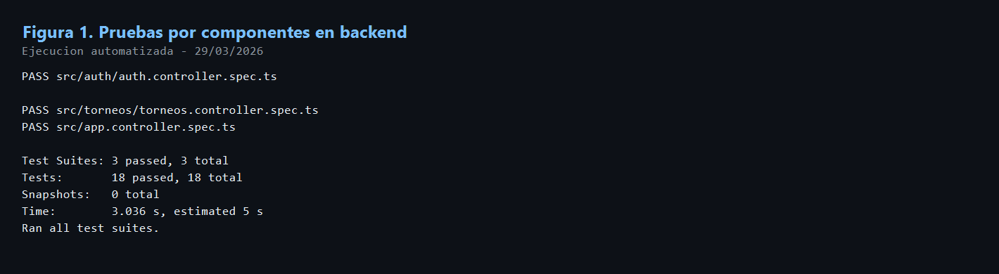
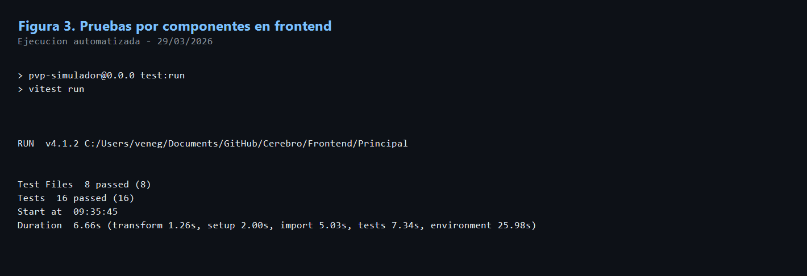
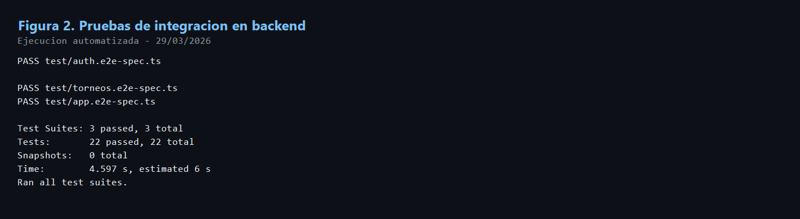

Informe De Estrategia Y Evidencia De Pruebas
1. Estrategia De Verificacion
Con el fin de verificar que el sistema funciona correctamente y cumple los
requerimientos funcionales definidos para los modulos de Auth y
Torneos, se establecio una estrategia de validacion en tres niveles:
pruebas por componentes, pruebas de integracion y pruebas de usabilidad. En esta fase
del proyecto se ejecutaron y documentaron las pruebas correspondientes a los dos
primeros niveles. Las pruebas de usabilidad quedan planificadas para una etapa
posterior, ya que requieren la participacion de usuarios reales.
2. Pruebas Por Componentes
2.1 Objetivo
Las pruebas por componentes tienen como objetivo validar el comportamiento aislado de unidades funcionales del sistema, tanto en backend como en frontend.
2.2 Metodologia
- En backend se utilizaron pruebas unitarias con
Jest. -
En frontend se utilizaron pruebas de componentes con
VitestyReact Testing Library. - Se evaluaron controladores, paginas y componentes clave de Auth y Torneos.
2.3 Criterios De Exito
- El componente acepta entradas validas y produce la respuesta esperada.
- El componente rechaza entradas invalidas antes de ejecutar la logica principal.
- La accion se delega correctamente al servicio o API correspondiente.
- Los mensajes de error o exito son visibles y coherentes.
- La interfaz representa correctamente el estado esperado segun el contexto.
2.4 Casos Representativos Evaluados
Auth
- Inicio de sesion con credenciales validas e invalidas.
- Registro de usuario.
- Verificacion de correo.
- Solicitud de recuperacion de contrasena.
- Restablecimiento de contrasena.
- Cierre de sesion, verificacion de token y consulta de usuarios.
Torneos
- Listado de torneos publicos y autenticados.
- Creacion de torneo
SERIE. - Union a torneo mediante codigo.
- Cambio de estado del torneo.
- Visualizacion de ranking y detalle del torneo.
2.5 Evidencia De Ejecucion
Backend por componentes: comando npx jest --runInBand. Resultado:
3 suites, 18 pruebas, 0 fallos.

Figura 1. Ejecucion exitosa de pruebas por componentes en backend para los modulos Auth y Torneos.
Frontend por componentes: comando npm run test:run. Resultado:
8 archivos, 16 pruebas, 0 fallos.

Figura 2. Ejecucion exitosa de pruebas por componentes en frontend para los modulos Auth y Torneos.
3. Pruebas De Integración
3.1 Objetivo
Las pruebas de integracion tienen como proposito verificar la interaccion entre componentes y servicios del sistema, especialmente entre rutas HTTP, validaciones, guards y servicios del backend.
3.2 Metodologia
- Se utilizaron pruebas
e2econJestySupertest. - Se evaluaron endpoints reales de los modulos Auth y Torneos.
- Se verificaron flujos exitosos y manejo de errores.
3.3 Criterios De Exito
- Cada endpoint responde con el codigo HTTP esperado.
- Las validaciones bloquean payloads invalidos.
- Las rutas protegidas exigen autenticacion.
- Los flujos exitosos recorren correctamente controlador, validacion y servicio.
- Los errores son manejados de forma controlada.
3.4 Flujos Evaluados
Auth
login,refresh,signup,verify-emailforgot-password,reset-password,verify-tokenusersylogout
Torneos
- Listado publico, detalle publico y ranking publico.
- Creacion autenticada de torneo.
- Union a torneo mediante codigo.
- Cambio de estado.
- Rechazo de solicitudes invalidas.
3.5 Evidencia De Ejecucion
Backend integración: comando
npx jest --config ./test/jest-e2e.json --runInBand. Resultado:
3 suites, 22 pruebas, 0 fallos.

Figura 3. Ejecucion exitosa de pruebas de integracion en backend para los modulos Auth y Torneos.
4. Pruebas De Usabilidad
Las pruebas de usabilidad no se presentan en este documento como evidencia ejecutada, ya que requieren sesiones controladas con usuarios reales. Esta fase se desarrollara posteriormente para evaluar facilidad de uso, claridad de flujos, tiempos de completitud de tareas y nivel de satisfaccion del usuario.
5. Conclusión
Con base en la evidencia obtenida, se concluye que los modulos Auth y
Torneos cumplen satisfactoriamente con los escenarios funcionales
principales definidos para esta fase del proyecto. Las pruebas por componentes
confirmaron el funcionamiento correcto de las unidades evaluadas de manera aislada,
mientras que las pruebas de integracion validaron la correcta interaccion entre rutas,
validaciones, guards y servicios del backend.